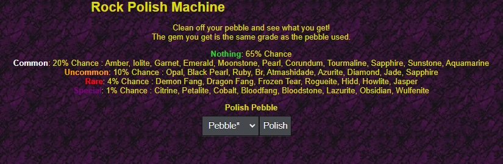

Overview

"Across your travels, you may discover pebbles occasionally that do not have much use." These items can be obtained from failed gem rolls or through Clan Mines, with three primary uses available.
Smash for Gold
| Grade | Gold |
|---|---|
| 1 | 10k |
| 2 | 40k |
| 3 | 90k |
| 4 | 160k |
| 5 | 250k |
| 6 | 360k |
| 7 | 490k |
| 8 | 640k |
| 9 | 810k |
Converting pebbles to currency is "generally unwise," though it can help during early-round progression when gold acquisition is limited.
Trade to other Players
Trading functions through standard marketplace mechanisms but is "generally not used in this way."
Rock Polish Machine
Located at coordinates 3,7 in the Lair of Temptation, this device allows gambling pebbles for gem rewards. "You insert a pebble, and you have a very high chance of getting nothing, or a gem depending on your luck."
Outcome Categories
| Category | Chance | Possible Results |
|---|---|---|
| Nothing | 65% | No reward |
| Common | 20% | Amber, Iolite, Garnet, Emerald, Moonstone, Pearl, Corundum, Tourmaline, Sapphire, Sunstone, Aquamarine |
| Uncommon | 10% | Opal, Black Pearl, Ruby, Bloodrock, Atmashidade, Azurite, Diamond, Jade, Sapphire |
| Rare | 4% | Demon Fang, Dragon Fang, Frozen Tear, Rogueite, Hiddenite, Howlite, Jasper |
| Special | 1% | Citrine, Petalite, Cobalt, Bloodfang, Bloodstone, Lazurite, Obsidian, Wulfenite |
Museum upgrades can improve odds by reducing nothing outcomes while increasing other category probabilities. Rare and Special results trigger chat announcements for all players.